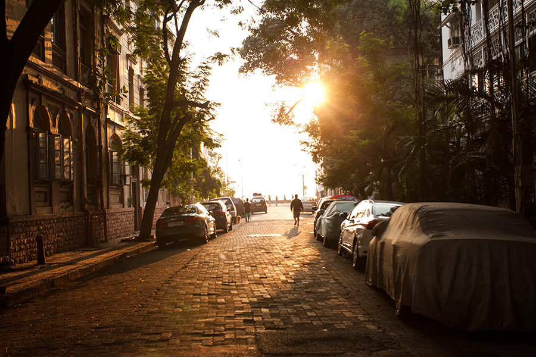

Photos
Canon 5D Mark II
Two of my favorite hobbies are traveling and landscape photograph. These are just some of the photos I've taken over the years on my trips. I currently shoot with a Canon 5D Mark II and my primary lens of choice is a 17-40 f/4 and a 50mm f/1.4.
Red Sandstone Mosque left of the Taj Mahal, India

Sunrise in Mumbai, India
Ganges River varanasi, India

Shibuya Crossing Tokyo, Japan
Ryōan-ji Zen Garden Kyoto, Japan

Wat Benchamabophit Bangkok, Thailand

Grand Buddha Ling Shan, China
Yuyuan Garden Shanghai, China